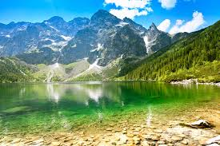
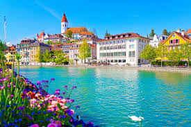

UM DIA ME PERGUNTEI, "QUAL A PAISAGEM MAIS BONITA DO MUNDO? E ONDE ELA ESTA?"
Realmente é um lugar com uma paisagrm bonita, mas sera que é o lugar com a mais bonita?

SERA QUE ESSA NA POLONIA É A MAIS BONITA?
Você decide que a aventura é grande demais e volta para casa, mas sempre se pergunta o que teria encontrado.
Dentro do estadio você realmente viu uma bela paisagem mas foi pra polonia!
Na praia você encontrou uma muito bela!
Na polonia você realmente achou muito bonita mas ainda sim não gostou 100%
Na cidade você encontrou pista sobre polonia
Ir para uma especial que eu encontrei?
A SUIÇA realmente é bem bonita mas eu acho que ainda não é a mais bonita
Você realmente encontrou uma muito bela!
Após a Suiça você encontrou uma que realmente te impressionou